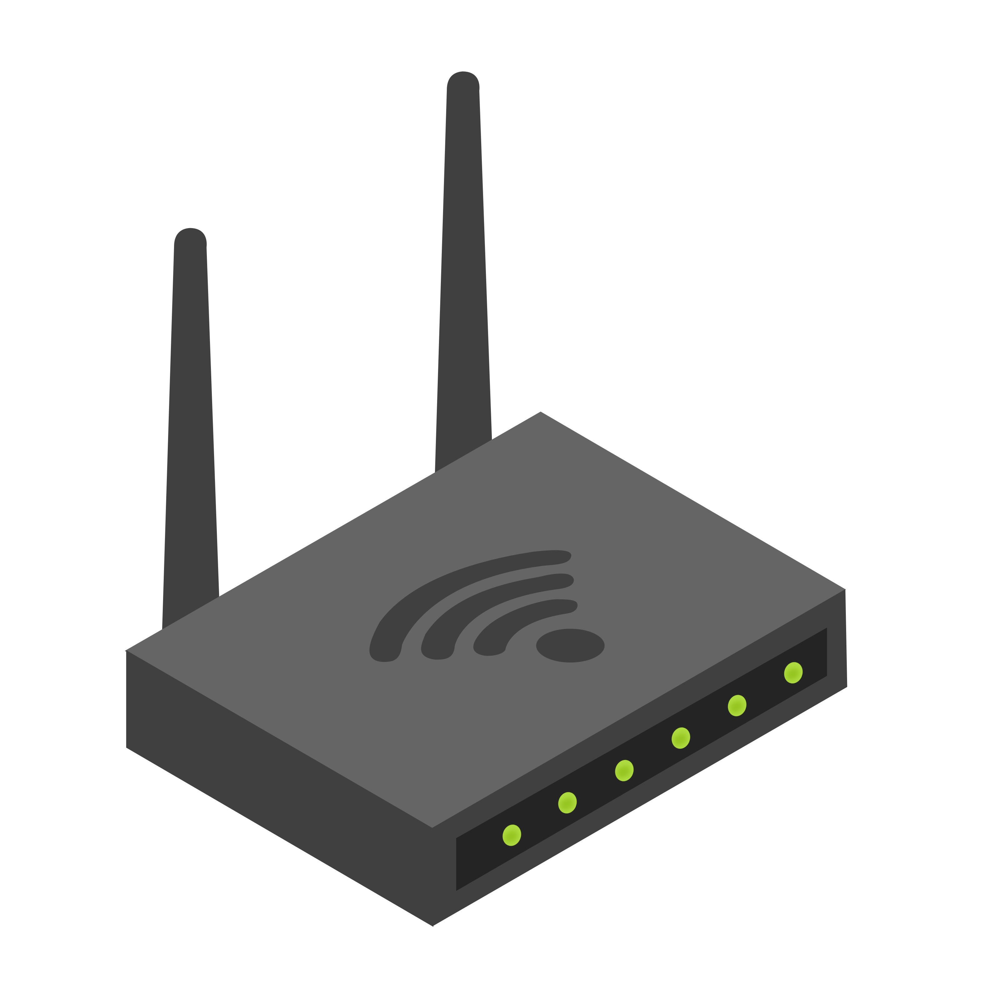

A router is defined as a device that connects two or more packet-switching networks or subnetworks. Regarding functionality, a router has two primary purposes: to manage the transmission of data across packet-switched networks by routing data packets to multiple IP addresses and allowing many users to access a single internet connection.
Redundancy means something is superfluous or that certain functions are performed more than once in a given system. However, when it comes to computing, redundancy is necessary for reliability, fault tolerance, and availability. There is redundancy across the board; hardware redundancy, software redundancy, data and communication redundancy. Systems would fail to operate effectively upon failure without it.
.svg)
In the world of computer science, a packet is a formatted unit of data that is sent over a computer network. These are the basic building blocks through which the majority of networking is done today, especially networking that uses the internet. A packet has 3 major parts: A header that contains metadata about the packet, like source and destination IP addresses, sequence numbers, and protocol information. A payload in which the actual data is being transmitted such as a picture, webpage, or email. An optional footer in which any additional information you deem important for error checking.
home